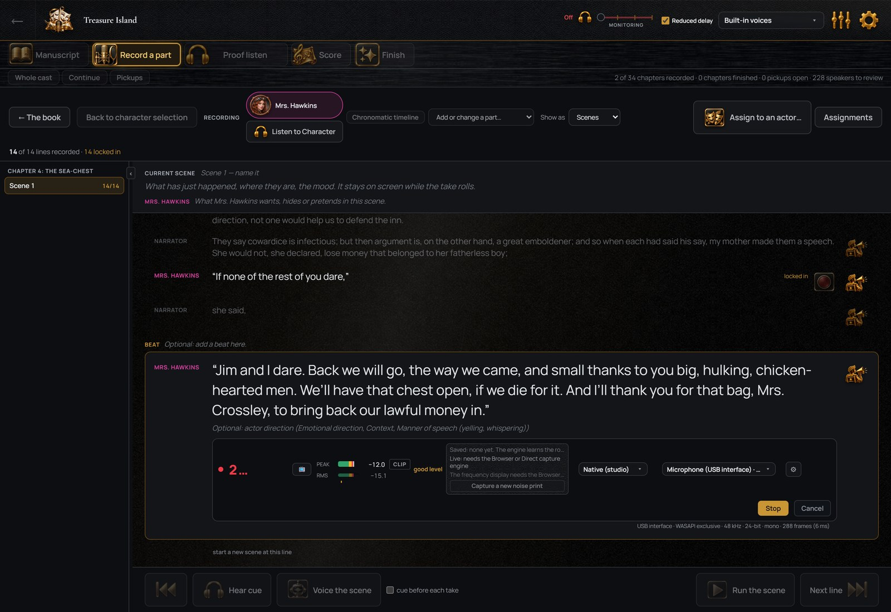

Free for performers
An invitation opens the program for you without a plan. You record, listen and send; the author’s plan covers the rest.
For narrators
StellAurator keeps the manuscript, every take, every correction and every finished chapter in one place, in the order the book was written. Read continuously, stop and reread when needed, and the takes are organized around the text. Proofing, correction, mastering and delivery happen in the same window.
No card. The recording workflow is the same as in any studio; the organization and the post-production are automated.
The on-screen script keeps the current line in a highlighted band and scrolls at the pace you set. A whole chapter can be read in one pass, with text large enough to read from a distance. There is a count-in before recording starts, and the click of the key or mouse that stops it is removed from the take.
You hear yourself in your headphones with the lowest delay your hardware allows. StellAurator connects to the microphone through its own driver and shares the headphones with your other programs, so nothing else is muted while it is open.

A mistake does not end a pass. Stop, return to the start of the sentence, read it again and continue. The whole pass is one recording until you press stop; it is then split into the manuscript’s lines at the pauses, on your own computer, and each take is placed on its line.
Where a sentence was read twice, both readings are kept on that line and you choose which to keep. Splitting by the words instead, so that a reread sentence is matched by what was said, requires a transcription service connected under your own account.

Record a part plays one character’s lines through the book, scene by scene, with the cue line before each one, the scene and character direction above the script, and the line’s own note under its words. Hear the cue, record, next. How direction is written.

A line keeps every take made of it, with its waveform and length, until you delete it. The newest take is selected automatically unless you select another. A locked take is never replaced by accident. Spools A and B hold two complete readings of the book side by side, so a second pass never overwrites the first.
Every take is processed on import: rumble removed, harsh S sounds softened, loudness normalized. Every take is also analyzed for clicks, pops, plosives, breaths, hum and background noise as you record, with fixes suggested under it. A fix is a layer over the take, not a new file.

Proof listen plays a chapter as it will be delivered, including pauses, and ticks off each line as it is heard. Press F on any line to mark it for a pickup without stopping; the reason is recorded with it. When every line has been heard, the chapter can be signed off. If a line is changed later, only that line needs to be heard again.
Finish takes the chapter, or the whole book, through Diagnose, Plan, Apply, Check and Export in one step: levels normalized, the chapter measured against ACX’s technical requirements before and after, and one file per chapter in the format ACX requires, or one chaptered file for other stores. The check covers what can be measured; acceptance is ACX’s decision.

Working with authors
When an author produces their book in StellAurator, they can invite you with a link. Your copy of the program is free, with no account and nothing to pay. You see the lines assigned to you, with the author’s direction, and your recordings are sent back and placed on the right lines. The production stays on their computer.
An invitation opens the program for you without a plan. You record, listen and send; the author’s plan covers the rest.
For the books you produce yourself, one plan covers everything: recording, clean-up, music, finishing and delivery, on up to three computers.
Every exported file is labeled. A reading you recorded is a human performance; a file with a computer voice is marked as containing computer-generated narration. The voices and the rules.
No card required. 64-bit Windows 10 or 11. The installer is signed, so Windows shows the publisher when you run it. Mac and phone versions are on the way: get notified.